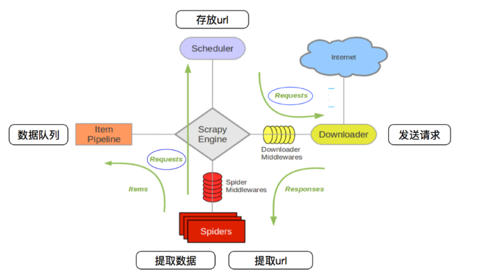
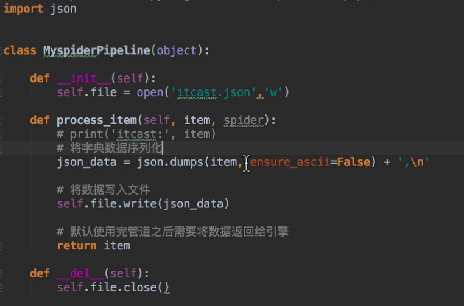

一. 概念
1 | # scrapy是一个python编写的开源网络爬虫框架 |
二. 流程
1 | # 1.爬虫中起始的url构造成的request对象--->爬虫中间件---->引擎---->调度器存放 |

三. 各模块的作用
1 | # Scrapy Engine(引擎) : 总指挥,数据和信号的传递.框架已经实现 |
四. 使用scrapy框架
安装
1
pip3 install scrapy
2.创建项目
1
2
3
4
5
6
7
8
9scrapy startproject 项目名
# 创建的各文件的作用
items.py 需要爬取的内容
middlewares.py 自定义中间件
pipelines.py 管道 清洗保存数据
spiders 文件夹存放爬虫程序, 提取解析数据
settings.py 设置文件
scrapy.cfg 项目配置文件3.建模
1
2
3
4
5在item.py中提前规划好哪些字段需要抓取,能够让别人清楚自己的爬虫是在抓取什么
'''
name = scrapy.Filed() # 姓名
title = scrapy.Filed() # 标题
'''4.创建爬虫
1
2
3
4
5
6
7
8
9cd 项目 # 在项目下
scrapy genspider 爬虫名 爬取网站域名
# 爬虫文件中生成的内容
三个参数: name 爬虫名
allowed_domains 允许爬取的网站域名
start_urls 设置起始url,会自动生成并发送请求
一个方法: parse:解析数据方法,通常用于起始url对应的响应的解析
5.完成爬虫
1
2
3
4
5
6
7
8
9
10# 修改起始的url
# 检查修改允许的域名
#在parse方法中实现爬取逻辑运行爬虫
1. 在提取数据时使用response.xpath(),其得到是一个选择器对象,一般操作和提取列表中某个元素一样,然后使用extract()方法返回字符串的列表.
如果列表中只有一个数据可以使extract_first()
# 例如: response.xpath("/div[@class='tes_con']")[0].extract()
2.在返回数据给引擎时,一般使用yield 关键字
使用生成器,可以将返回的数据读到内存中,不会造成内存占用过高,同时对翻页操作也方便.
3. 在程序中必须有parse方法
4.在需要抓取的url,必须是allowed_domains中允许的,不然会被过滤掉6.保存数据
1 | #在pipelines.py 文件中定义对数据的操作 |

7.运行爬虫
1 | # 在项目目录下 |
五. 数据的相关处理问题
- 翻页请求
1 |
|
- scrapy.Request的参数
1 | # 方括号为可选参数scrapy.Request(url[,callback,method="GET",headers,body,cookies,meta,dont_filter=False]) |
模拟登陆
1
2
3
4
5
6
7
8
9
10
11
12
13实现模拟登陆的方式:
1. requests模块:
携带cookies请求(适合cookies有效期长的)
获取url地址,发送post请求,存储cookie
2. selenium模块:
找到对应的input标签,输入文本点击登录
3. scrapy 框架: 同requests
#直接携带cookie实现过程: 由于模拟登录需要携带cookie,但是框架中的start_requests()方法没有实现,所以需要重构,获取到cookie
# 通过post请求的过程: 找到请求登录的url地址,再分析请求体中参数的规律(这是最难的地方)最后模拟登陆
#注意:
1.scrapy中的cookie不能够放在headers中
2.在运行时需要将setting中的ROBTS协议关闭,同时也要模拟请求头
3.在settings.py中通过设置COOKIES_DEBUG=TRUE 能够在终端看到cookie的传递传递过程管道使用
1
2
3
4
5
6
7
8
9
10
11
12当创建了两个爬虫后,如果对管道不进行处理,则会出现运行一个爬虫,会保存两份数据,所以需要通过spider参数的name属性进行一个判断.同时每次通过open_spider(self, spider)方法开启管道,
close_spider(self, spider)关闭管道
# 注意点:
1. 使用之前需要在settings中开启
2. pipeline在setting中键表示位置(即pipeline在项目中的位置可以自定义)，值表示距离引擎的远近，越近数据会越先经过：**权重值小的优先执行**
3. 有多个pipeline的时候，process_item的方法必须return item,否则后一个pipeline取到的数据为None值
4. pipeline中process_item的方法必须有，否则item没有办法接受和处理
5. process_item方法接受item和spider，其中spider表示当前传递item过来的spider
6. open_spider(spider) :能够在爬虫开启的时候执行一次
7. close_spider(spider) :能够在爬虫关闭的时候执行一次
8. 上述俩个方法经常用于爬虫和数据库的交互，在爬虫开启的时候建立和数据库的连接，在爬虫关闭的时候断开和数据库的连接crawlspider
1
2
3
4
5
6
7
8
9
10
11
12
13
14
15
16
17
18
19
20crawlspider爬虫解决的需要处理很多url地址时,根据自己定义的规则构造requests请求,发送给引擎
1.创建:scrapy genspider -t crawl 爬虫名 域名
2.参数:
"""
rules = (
Rule(LinkExtractor(allow=r'Items/'), callback='parse_item', follow=True),
)
"""
1. rules是一个元组或者是列表，包含的是Rule对象
2. Rule表示规则，其中包含LinkExtractor,callback和follow等参数
3. LinkExtractor:连接提取器，可以通过正则或者是xpath来进行url地址的匹配
4. callback :表示经过连接提取器提取出来的url地址响应的回调函数，可以没有，没有表示响应不会进行回调函数的处理
5. follow：连接提取器提取的url地址对应的响应是否还会继续被rules中的规则进行提取，True表示会，Flase表示不会
3.注意点:
1. 除了用命令scrapy genspider -t crawl <爬虫名> <allowed_domail>创建一个crawlspider的模板，页可以手动创建
2. crawlspider中不能再有以parse为名的数据提取方法，该方法被crawlspider用来实现基础url提取等功能
3. Rule对象中LinkExtractor为固定参数，其他callback、follow为可选参数
4. 不指定callback且follow为True的情况下，满足rules中规则的url还会被继续提取和请求
5. 如果一个被提取的url满足多个Rule，那么会从rules中选择一个满足匹配条件的Rule执行中间件
1
2
3
4
5
6
7
8
9
10
11
12
13
14
15
16
17
18
19
20
21
22
23
24
25
26
27
28
29
30
31
32
33
34
35
36
37
38
39
40
41
42
43
44
45
46
47
48
49
50
51
52
53
54
55
56
57
58
59
60
61
62
63
64
65
66
67
68
69
70
71
721. 类别:下载中间件 爬虫中间件
2. 作用: 预处理request 和response对象
① 对header以及cookie进行处理
② 使用代理ip
③ 对请求进行定制化操作
3. 使用方法:
①需要在Middlewares.py文件定义一个类,然后在setting中开启
②两个方法: process_request(self,request,spider)
每个请求先经过下载中间件,该方法被调用.
a. 返回None值: 表示该request请求传递给下载器
或者返回给引擎传递给了权重低的process_request方法
b. 返回Response对象：不再请求，把response返回给引擎
c. 返回Request对象：把request对象通过引擎交给调度器，此时将不通过其他权重低的process_request方法
process_response(self, request, response, spider)
下载器完成请求后,返回给引擎时被调用
a. 返回Resposne：通过引擎交给爬虫处理或交给权重更低的其他下载中间件的process_response方法
b. 返回Request对象：通过引擎交给调取器继续请求，此时将不通过其他权重低的process_request方法
4.应用:
① 实现随机User-Agent
② 代理ip
免费代理ip
"""
class ProxyMiddleware(object):
def process_request(self,request,spider):
# proxies可以在settings.py中，也可以来源于代理ip的webapi
# proxy = random.choice(proxies)
# 免费的会失效，报 111 connection refused 信息！重找一个代理ip再试
proxy = 'https://1.71.188.37:3128'
request.meta['proxy'] = proxy
return None # 可以不写return
"""
收费代理ip
"""
# 人民币玩家的代码(使用abuyun提供的代理ip)
import base64
# 代理隧道验证信息 这个是在那个网站上申请的
proxyServer = 'http://proxy.abuyun.com:9010' # 收费的代理ip服务器地址，这里是abuyun
proxyUser = 用户名
proxyPass = 密码
proxyAuth = "Basic " + base64.b64encode(proxyUser + ":" + proxyPass)
class ProxyMiddleware(object):
def process_request(self, request, spider):
# 设置代理
request.meta["proxy"] = proxyServer
# 设置认证
request.headers["Proxy-Authorization"] = proxyAuth
"""
检测代理ip
"""
class ProxyMiddleware(object):
......
def process_response(self, request, response, spider):
if response.status != '200':
request.dont_filter = True # 重新发送的请求对象能够再次进入队列
return requst
"""
③ 使用selenium 模拟登录
5.注意点:
① 需要在settings.py中开启中间件
例如:
DOWNLOADER_MIDDLEWARES = {
'myspider.middlewares.UserAgentMiddleware': 543,
}
②但在scrapy默认的情况下 两种中间件都在middlewares.py一个文件中
③爬虫中间件使用方法和下载中间件相同，且功能重复，通常使用下载中间件